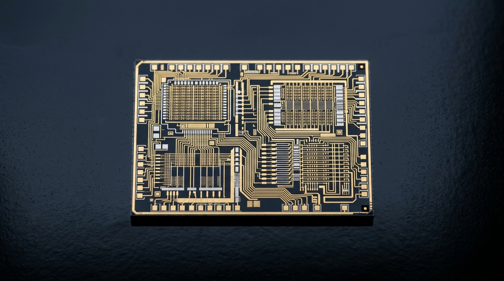

VLSI & SILICON
Very Large Scale Integration (VLSI)
Investigating how billions of transistors synchronize on microscopic silicon dies. My focus is centered on digital logic synthesis, CMOS operational physics, propagation delays, Boolean optimization, and preparing for Hardware Description Languages (HDL/Verilog).
CMOS Fundamentals
Combinational Logic
Sequential Flip-Flops
Clock Skew & Delays
Silicon Fabrication Intro
// Goal: From Boolean algebra to synthesizable chip architecture.